涅槃堂/静岡県
静岡で早春の訪れといえば伊豆の河津桜の開花である。
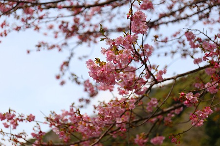
普通のソメイヨシノなどと違って河津桜は2月上旬から3月にかけて徐々に開花するので、春が待ち遠しい桜ファンのみならず、冬に飽き飽きした観光客が押し寄せる名所となっているのだ。
メインとなる河津川沿いの桜並木には大勢の人が訪れ、一足早い花見を楽しんでいる。
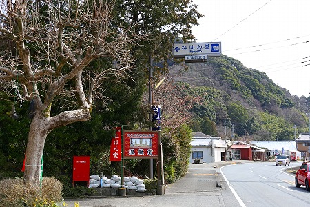
そんな河津の桜並木の近くに涅槃堂と呼ばれるお堂がある。
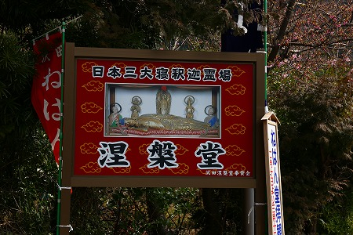
看板を見ると日本三大寝釈迦霊場とあるではないか。
あとのふたつはどこだろう…？
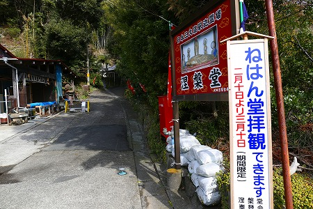
しかも河津桜の開花時期にのみ内部を公開している。
これは拝観するしかないっ！
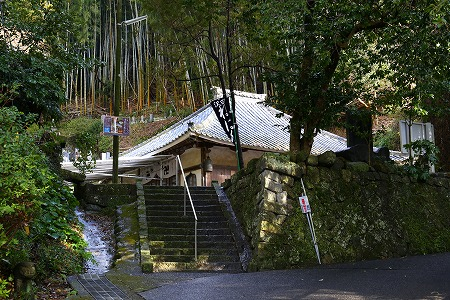
周辺には墓もあり、元々は何某かのお寺であったはずだが、現在では涅槃堂という抽象的な名前でしか呼ばれていない。
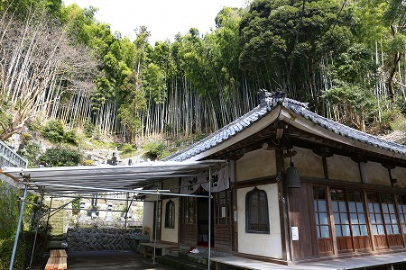
涅槃堂奉賛会という団体が運営を行っていることから、寺としての機能は失われており、地元の方々によって保存管理されているされているようだ。
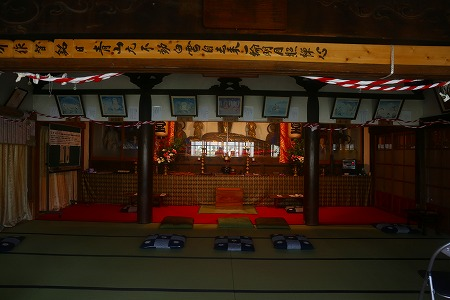
中にお邪魔すると正面にガラス張りの祭壇が見える。
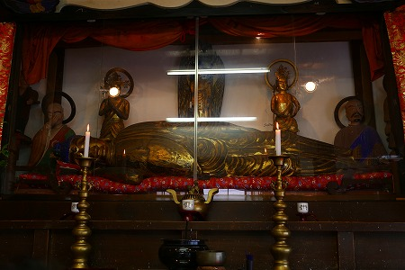
その中に大きな涅槃像が見える。
ガラス越しなので、よく見えないことだけは先にお断りさせていただきますよ。
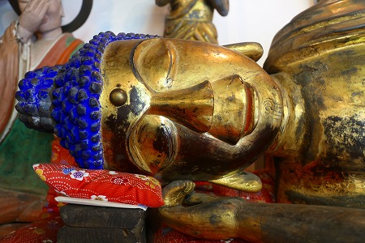
…というわけでガラス越しに接写。
全長2.58ｍ。檜の一木造だ。
壁に貼られた新聞の切り抜きによれば製作は所説あり、寛政説、貞享説、寛永説…と定まらない。
いずれにせよ涅槃像のご尊顔をご覧いただければお判りのように、素人の作だろう。
2メートル以上の檜を彫り進めていくのは相当難しい作業なのでまるっきりの素人かどうかは微妙なところだが、少なくともプロの仏師の仕事ではないことは明らかだ。
涅槃像の左右には釈迦の入滅を見守る仏弟子達がズラリと並んでいる。
こちらは左サイド。
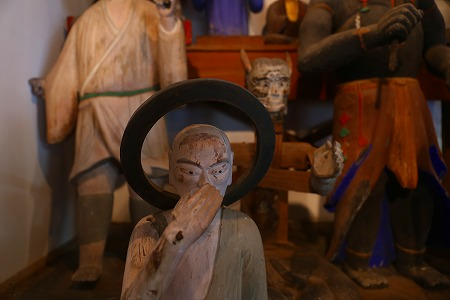
いずれも御覧の通り、釈迦の入滅、という仏教史上最大の事件に際した緊迫感などまるどどこ吹く風。
リラックスしまくった表情が印象的だ。
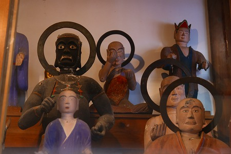
辛うじて顔に手を添えているようだが、釈迦の入滅に際して悲しんで泣いているのが定番だが、ここではかなりゆる〜い感じで表現されている。
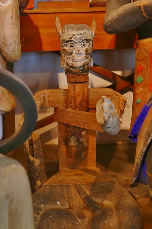
こちらは鬼、なのだろうか？
珍しい作り方をしてますね。
何だろう、この上に着物を着せるのか、土を上塗りするのか？ナゾだ。
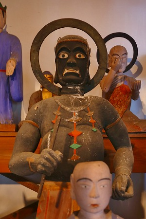
この方もかなり異形だ。もしかしたら仁王なのかもしれない。
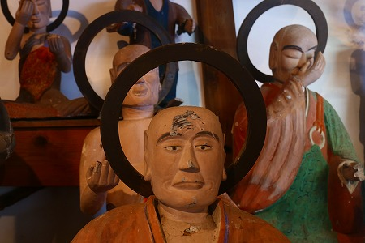
頭にざっくり深い傷がある方も。
この傷跡からすると、もしかしたら周囲に並んだ釈迦弟子たちの像は張り子かあるいは漆喰のようなモノで仕上げたように見える。
さっきの鬼のような像もそうだが、結構独自の作り方をしているようだ。
一方右サイド。
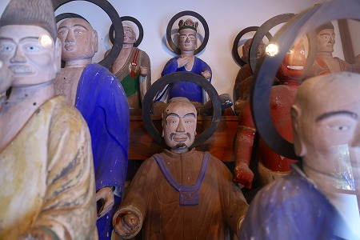
こちらも悲しみの表現はどこへやら。
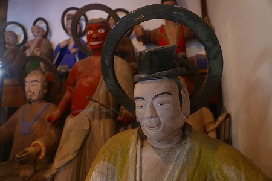
良い感じにリラックスされていて、見ているこちらも緩い気分になって来る。
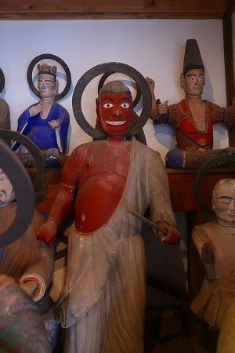
先ほどの黒い人と対のポジションに立っていたので、仁王なのかな？
でも光背付いてるし、違うのかな。
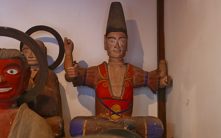
三角帽をかぶった人だけ手が4本あった。
つまり仏弟子ではなく、何らかの天部なのだろう。
かように正体不明の群像が並ぶ様は見ていて思わず笑みがこぼれてしまう。
このユルさ、いわば江戸時代の珍寺といえよう。
そして現代の珍寺と同様、造形技術が伴わない仏像だからこそ魂に直接語りかけてきているように感じる。
常々私は下手な仏像の方が端正な国宝仏なんかよりよっぽど信仰の真の姿を示しているんだぜ理論を唱えている。
端正な文化財級の仏像を100体並べて見たって信仰の姿なんてまるで見えて来ない。
精々、癒されるーとか綺麗ですねー、程度の評価しかしてないでしょ。
ところが技術が稚拙なのに敢えて作らざるを得ないような下手っぴな仏像からは信仰の真剣さや崇高さ、凄味を感じることが出来るんです！
…というわけで、下手な仏像バンザイ！下手な仏像最高！となる訳です。
判りますか？判りませんか？…じゃあイイです…。
…キレイハキタナイ、キタナイハキレイ…
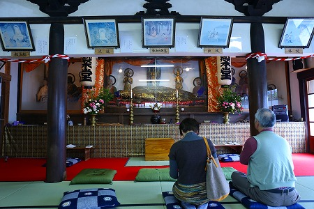
堂内には河津桜見物ついでに参拝に来る人が結構やってくる。
参拝客もゆるい感じでお参りしていく。
お寺の管理じゃないゆるさ
花見ついでに来るゆるさ
そして涅槃像や周辺の像の造型のゆるさが相俟って何とも言えないゆっる〜い空気に支配されている。
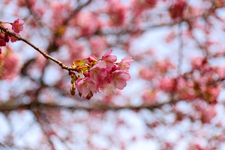
まあ、寒い季節にいくらかでも春気分を味わいたい人たちが集う場所だけに、こんなゆる〜い釈迦入滅図があってもいいのかもね。
…と妙に納得した初春の一日でしたよ。
2015.02.
珍寺大道場 HOME